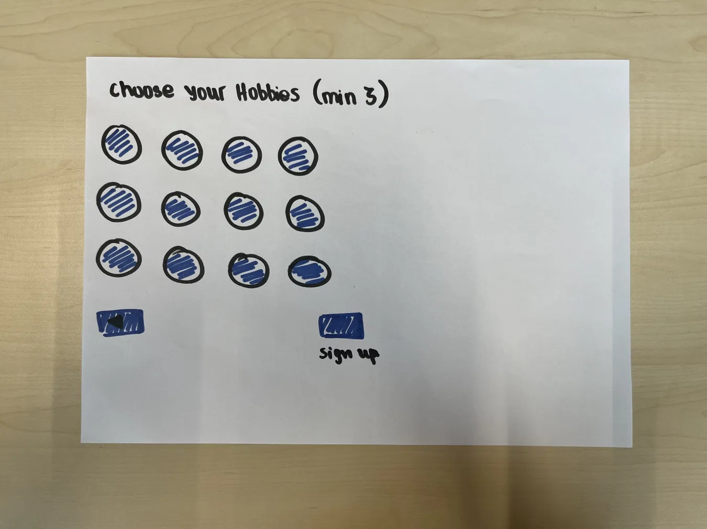
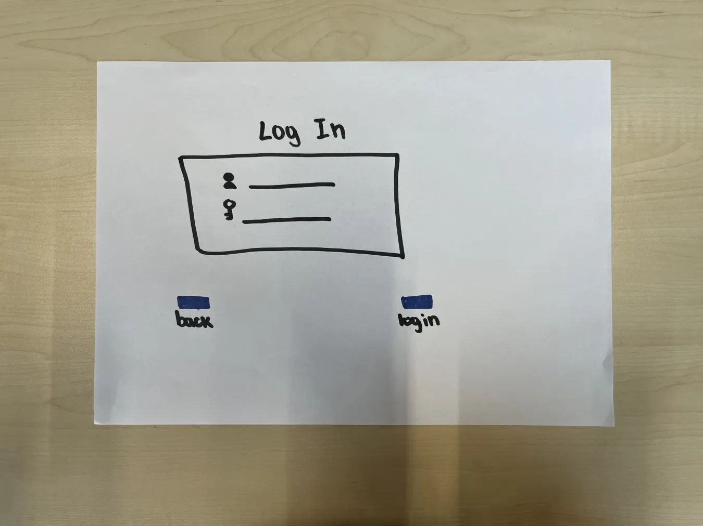
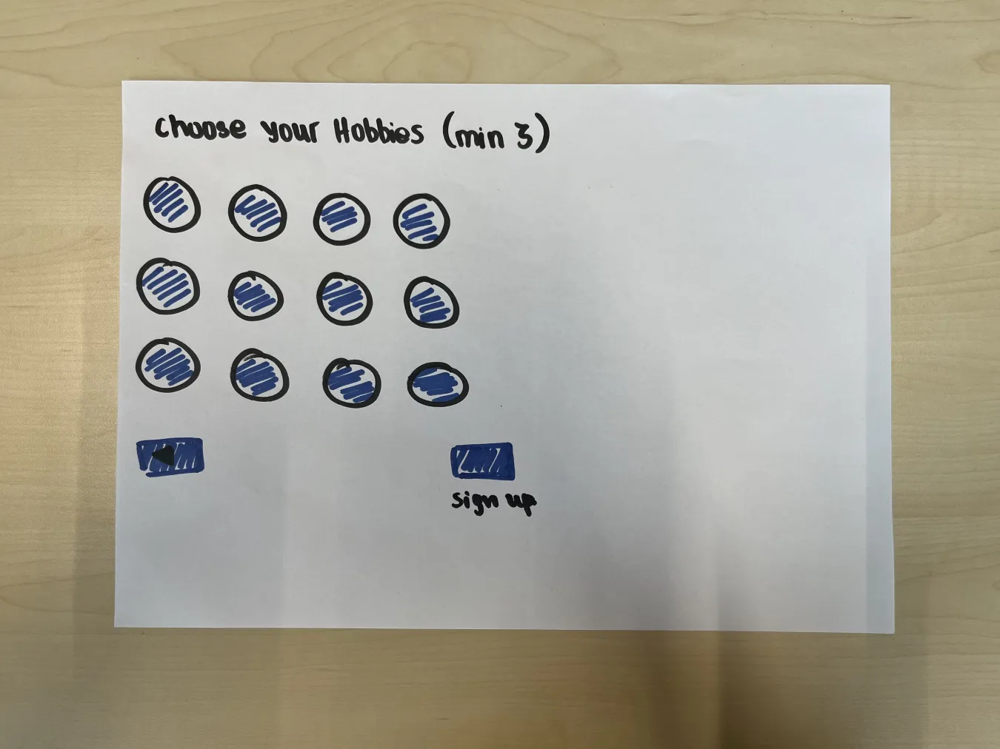
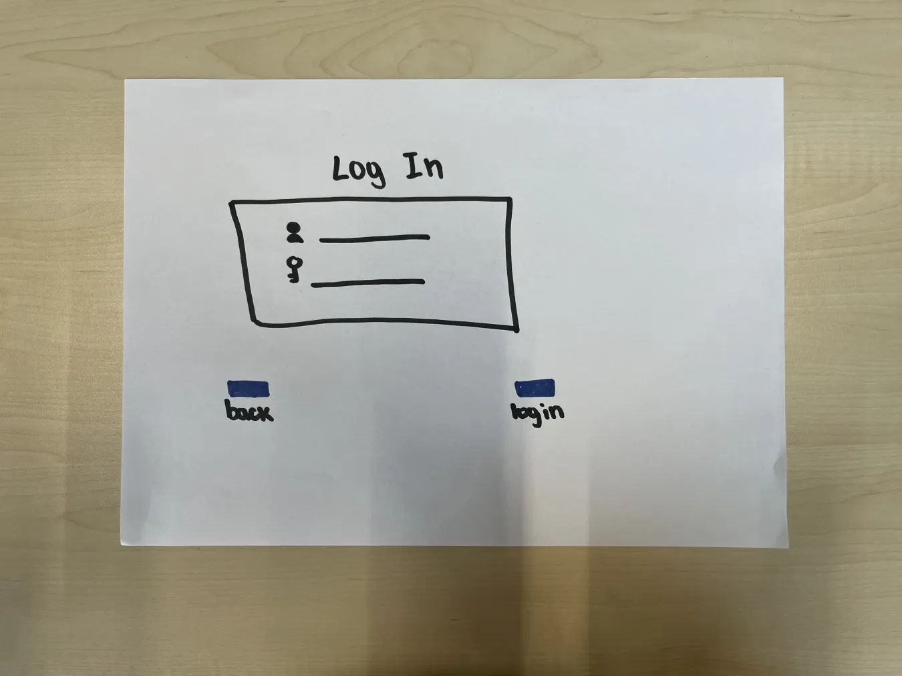

Learning goal
1.Adopt Animal Website - Develop an interactive website
2.Pokemon Card - Develop the card using web technologies (HTML, CSS, JavaScript)
3.Activity with Chris - Story telling
4.Work with Git (since Hera was not working) - Utilize Git for version control and collaboration during pep development.
 


